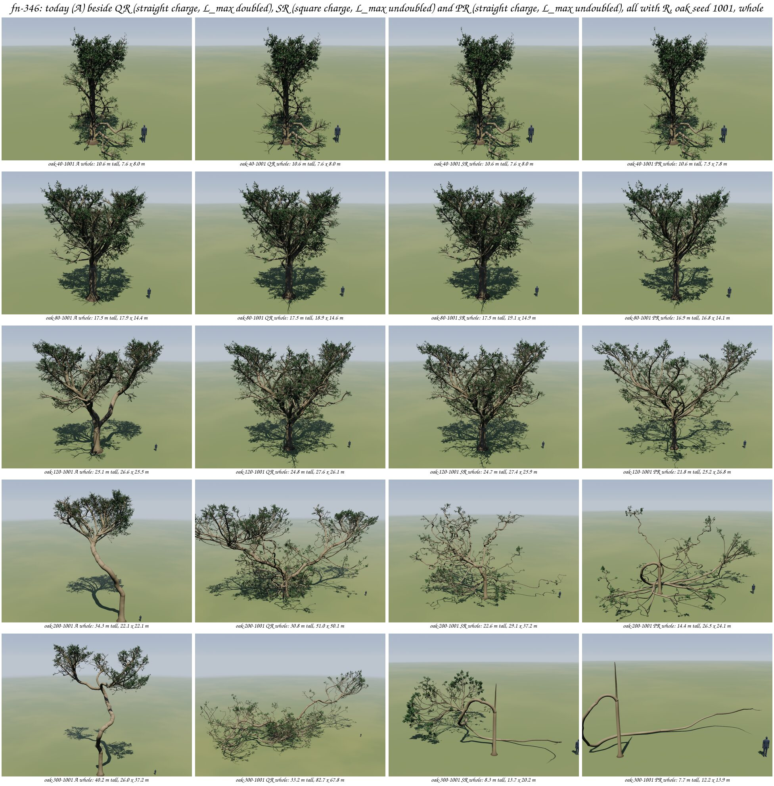
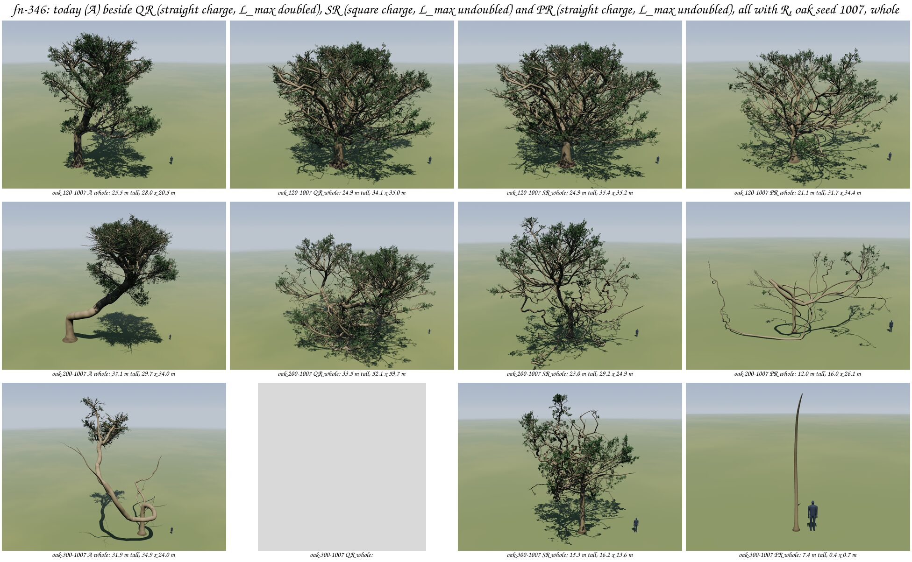
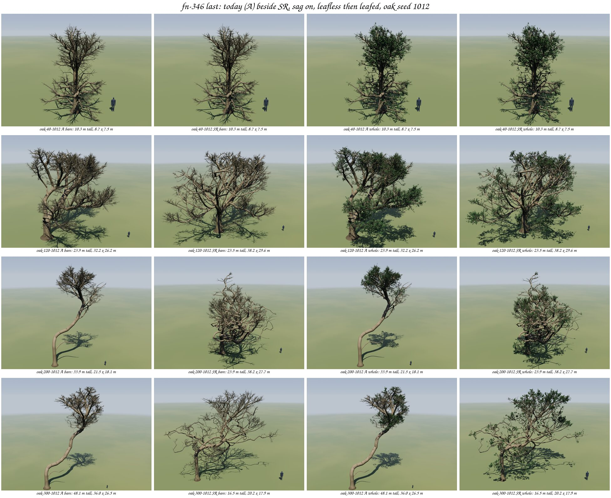
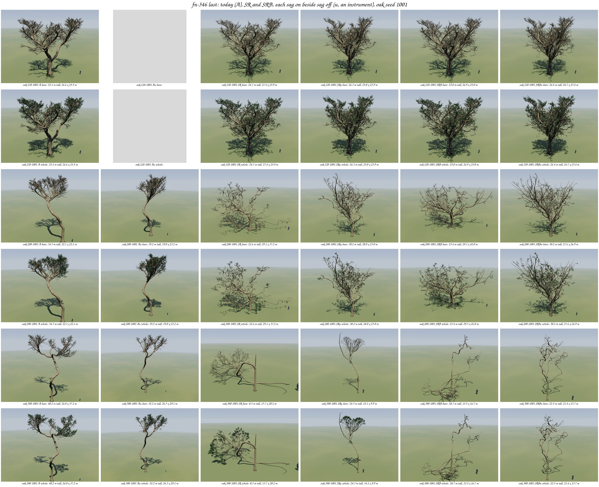
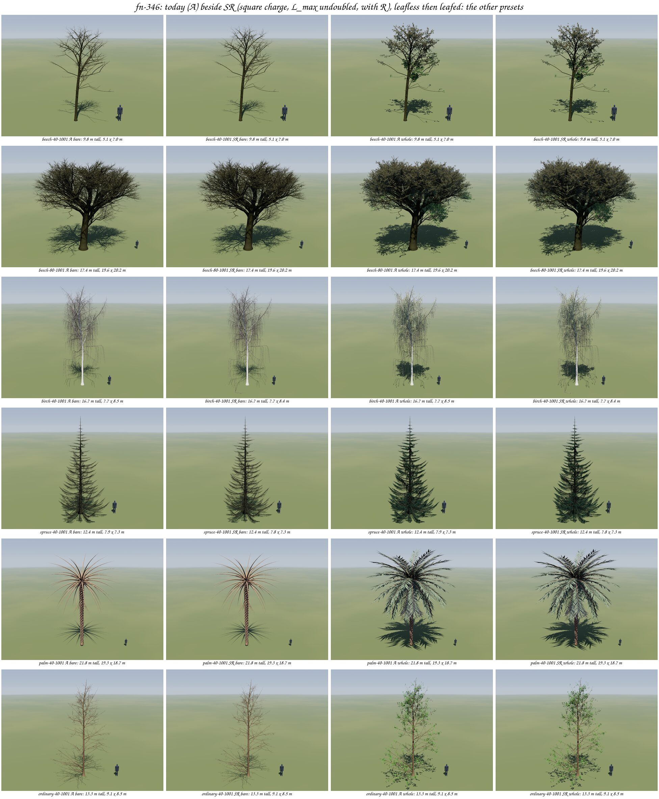

The oak's budget, fixed: the night's result
Goal fn-347, 11 Nov 2026. Written by the host. Nothing has merged into the working branch; nothing is pushed.
What is not met
- The old oak is not yet good on every seed. On one of three seeds the oak at 300 is drawn bent over to the ground, which is worse than today's. So the goal's bar (no tree worse) is not met and the fix has not been merged.
- The product change is not finished. Its CPU part is being built on a side branch. The GPU grower repeats the budget in shader code and still has to be changed to match; the test gate cannot pass until then.
- What bends the old tree is not the budget. The grower holds a steady oak of 30 to 33 m. The drawing step lays it down, because a limb's thickness falls as it sheds what it carries (trunk 137 cm at 120, 36 cm at 300) and sag acts on the thinned wood.
What is established
- The bug is fixed in the probe. Dead wood costs nothing. A living tip costs its size times the square of its distance from the root over the species' potential height.
- A limb is judged on what would remain. A limb is shed only if it would still not pay after its non-paying parts have gone. Before, a limb a hair under break-even was dropped whole (one went at −0.004 with 27,222 tips).
- The oak stops growing by its own economy, with no cap. The longest branch path holds at 34 to 38 m from about year 140, the height stops at 32 to 33 m, and tips and wood are level from about 220.
- It is cheaper. The grow to 300 takes 131 s and 2.2 GB against today's 146 s and 2.7 GB, measured in one session.
- Other species are unchanged at their preset ages: beech, birch, spruce, palm, ordinary.
My verdict per tree, against today's
| Oak | Seed 1001 | Seed 1007 | Seed 1012 |
|---|---|---|---|
| 40 | The same | not drawn | The same |
| 80 | The same | not drawn | not drawn |
| 120 | Better: many-limbed, clothed through its depth | Better: a broad full oak on a short bole | Better: broad and open where today's leans |
| 200 | Thinner than today's, form sounder; limbs low on one side | Neither: upright with a real trunk, thinly clothed | Better: a low, wide, clothed old tree where today's is a bent pole |
| 300 | Worse: the stem bends over to the ground | Better: a small upright old tree where today's is a twisted pole | Better: a spreading old tree where today's is a bent pole with a tuft |
Jev, asked four narrow questions about each of 18 stills, reads today's trunk as snaking at 200 and 300 on every seed (0.99 to 1.00) and today's tree as a pole with a tuft in five of those six. It reads the fixed oak as an old spreading tree in eight of nine stills and as broken in the ninth, the same one I call worse. It disagreed with me once: at 200 on seed 1001 I had called the fixed oak worse; I now keep only "thinner".
Today's oak beside the fix
Columns in the first two sheets: today, the earlier straight-cost variant, the fix (SR), a refuted variant. Rows: 40, 80, 120, 200, 300.





What was tried and dropped
| Rule | Outcome |
|---|---|
| One pipe per tip, straight cost | Refuted by arithmetic before any build: it would cost the oak more than its income from age 45. |
| Straight cost at the potential height | Starves the crown; the oak is dead by 280 on one seed. |
| Straight cost at twice the potential height | The tree never stops spreading: 60 to 83 m wide at 300, limbs on the ground. |
| Fine tips live on in place | A skirt of shoots on the young oak, a thicket over the birch's trunk. |
| Sleeping buds wake where a shoot would pay | Adds leaf at 200, but as built its shoots are born at near-zero size after a long sleep, so the drawn tree loses them. Not judged; needs that defect fixed first. |
| A part's radius never falls | Stacked cylinders and a hard step on the trunk, no tree held up, 2.4 to 4.3 times the cost. |
My estimates, for you to change
- The exponent 2 in the cost. The source I could reach (McDowell et al. 2002, abstract only) says trees keep more water-carrying wood per leaf as they grow taller, which "partially compensates". Full compensation, the square, is mine.
- Reading the potential height (34.8 m for the oak) against distance along the wood, not against height.
- A species with no value is not charged at all (the ordinary tree and the two fictional ones). They are not yet drawn under that.
The decision that is yours
- Finish and merge the fix as it stands (my recommendation). It is the same or better up to 120 on every seed, better or equal at 200 and 300 on two seeds of three, cheaper, and it removes the bug. The one failing case is a drawing fault that today's trees also carry in milder form (today's trunk shrinks from 143 to 120 cm). It needs the GPU part built, about 2 to 3 hours, then the gate and the review.
- Hold the fix until the old tree stands on every seed. That means a separate piece of work on how wood keeps its thickness and how sag reads it. Earlier work there (fn-337, fn-338, fn-341) did not end well, and I cannot promise how long it takes.